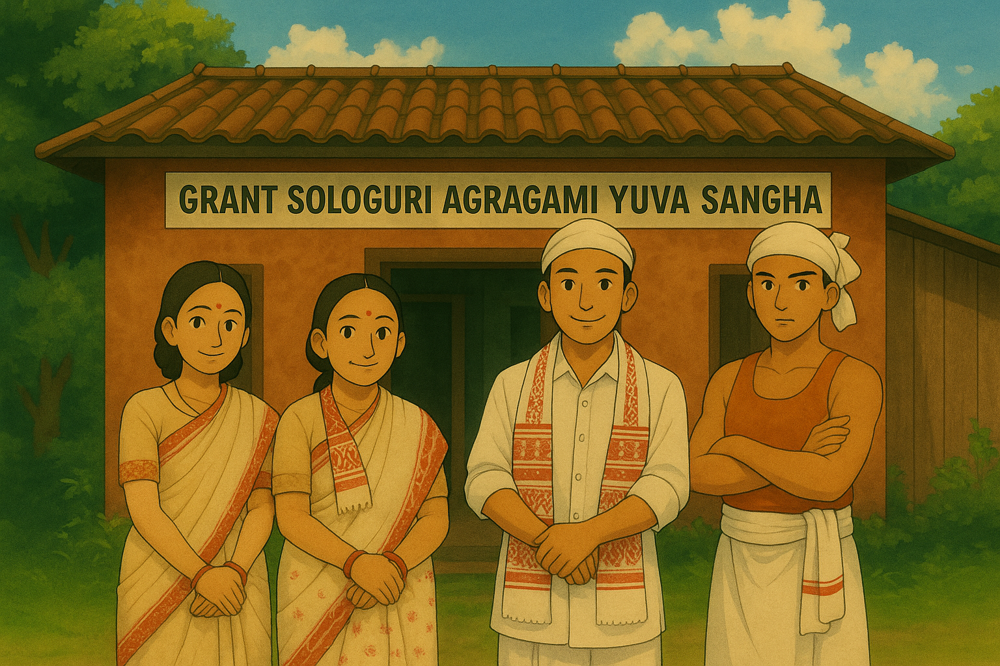

WELCOME to our community club
Grant Sologuri Agragami Yuva Sangha

Grant Sologuri Agragami Yuva Sangha is an active youth club that regularly organizes a variety of events throughout the year to engage, empower, and unite the community. We host annual cultural festivals, sports competitions, and community celebrations that highlight local talent and traditions. Quarterly activities include cleanliness drives, awareness campaigns, youth workshops, and social service projects. Our aim is to foster unity, preserve cultural heritage, encourage healthy lifestyles through sports, and contribute meaningfully to the development of our village and its youth.......
Grant Sologuri Agragami Yuva Sangha actively engages in a wide range of activities focused on social, cultural, sports, and academic development. The Sangha organizes community service programs, cultural celebrations, sports events, and educational sessions to empower youth and promote unity. Through these initiatives, we aim to build responsible citizens, encourage talent, and foster a spirit of teamwork and growth among members.In addition, the Sangha positively participates in every important occasion in the village, offering support and assistance to the local people..

We are a youth-led club based in Grant Sologuri, committed to promoting cultural heritage, sportsmanship, and community development. With a total of 70 dedicated members, Our activities include organizing cultural festivals, traditional dance and music events, sports tournaments like football, volleyball, and cricket, as well as social service initiatives such as cleanliness drives, tree plantation, blood donation camps, and educational support for underprivileged children....
PO: Aghunibari
PS: Bamunbari
Moran, Dibrugarh, Assam - 786613